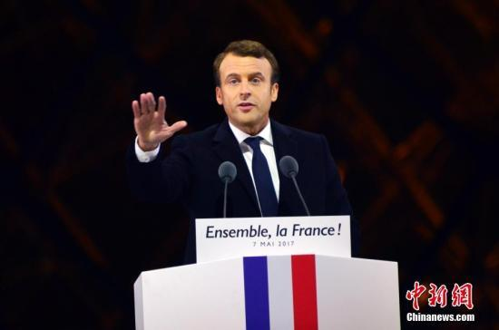
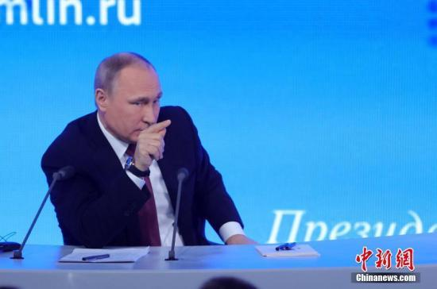

2017年05月29日
星期一
太原
 25℃
25℃
25℃
马克龙与普京会谈 重点磋商叙利亚、乌克兰问题
中新社巴黎5月29日电 法国总统马克龙29日在巴黎近郊的凡尔赛宫会见来访的俄罗斯总统普京，双方就叙利亚局势、乌克兰问题等国际事务议题“坦诚、直接地”交换意见，呼吁加强在叙反恐合作，并同意依照旨在解决乌克兰问题的“诺曼底模式”，尽快举行新一轮四国峰会。
 法国总统马克龙 资料图。 中新社记者 龙剑武 摄
当天下午，马克龙和普京在举行会谈后举行联合记者招待会。马克龙就叙利亚问题表示，法俄两国在未来数周内可以展开合作。法方的首要关切是打击恐怖主义，消灭“伊斯兰国”极端组织。法国还希望在维护叙利亚国家完整的前提下推动民主化过渡。
据此间媒体报道，普京在记者会上表示，俄方认为打击恐怖主义是当务之急。法方已提议成立工作组，就反恐问题展开务实合作。但是在叙利亚国家完整得不到维护的情况下反恐也无从谈起。
在谈及乌克兰问题时，马克龙表示，法方呼吁继续推动明斯克进程，缓和乌克兰局势。希望依照“诺曼底模式”，尽快举行法国、俄罗斯、德国、乌克兰共同参与的四方会谈。法俄还同意组织两国民间团体参与的论坛，让双方经济、文化和青年等各领域人士坦诚对话，消除误解。
 俄罗斯总统普京 资料图。 中新社记者 王修君 摄
普京强调说，俄罗斯因为乌克兰问题而遭受的经济制裁是不公正的，因为这类制裁措施完全无助于乌克兰危机的解决。他呼吁，任何限制俄罗斯参与国际贸易的做法都应该停止。
2014年6月，德、俄、乌、法领导人在曼底登陆纪念日活动期间举行四方会谈，就落实有关乌克兰停火的《明斯克协议》进行磋商。此后四国举行过一系列首脑级和部长级会议，被称为“诺曼底模式”
留言
挺好

越简单粗暴地灌输孩子要感恩，孩子越不会感恩。
[详细]